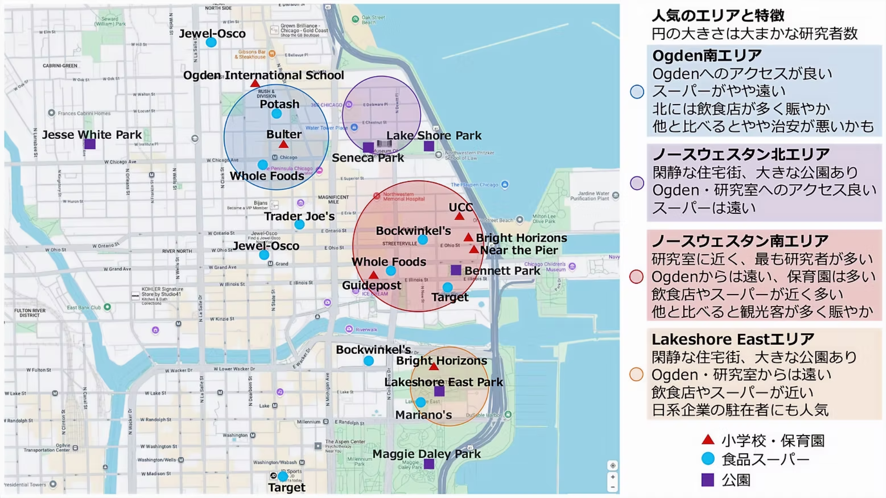

Northwestern University Chicago campus周辺に滞在する日本人研究者・留学生・ご家族は、Streeterville / Near North Side、Gold Coast / Ogden International School East Campus周辺、Lakeshore East / New East Side、River North北部などに住む例が多いです。
住居を選ぶ際は、研究室への通いやすさ、学校・保育園へのアクセス、スーパー、公園、夜間の雰囲気、家賃、建物のセキュリティ、洗濯機・乾燥機の有無、駐車場の有無などを総合的に考える必要があります。

上図のように、Chicago campus周辺では大きく分けて、Ogden南エリア、ノースウェスタン北エリア、ノースウェスタン南エリア、Lakeshore Eastエリアが住居候補になりやすいです。それぞれ、学校への近さ、研究室への近さ、スーパーや公園へのアクセス、街の雰囲気が異なります。
特にお子さんがいる家庭では、Ogden International School of Chicagoへの通学、保育園、公園、スーパーへの動線が重要になります。Ogden International School of Chicagoは、2026年4月時点で、East CampusがK-4、Jenner CampusがPreKおよび5-8、West Campusが9-12と案内されています。また、学校公式サイトでは、2026-2027年度からPreKをEast Campusへ移す予定と案内されています。Ogden目的で住居を探す場合は、学年ごとのキャンパス、CPSの入学条件、住所ごとのattendance boundaryを必ず確認してください。
人気のエリアと特徴
Ogden南エリア
上図の青色のエリアです。Ogden International School East Campusへのアクセスを重視する家庭に人気があります。Potash Market、Whole Foods、Trader Joe’s、Jewel-Oscoなどを利用しやすく、徒歩中心の生活がしやすい地域です。
Ogdenに近い一方で、Chicago campusからはやや北側になります。研究室への通勤は十分可能ですが、毎日の通勤経路、冬場の徒歩移動、バスやCTAの利用しやすさを確認しておくと安心です。
Rush Street周辺など、夜間に飲食店で賑わう通りもあります。静かな住環境を重視する場合は、学校やスーパーまでの距離だけでなく、夜間の通りの雰囲気も確認してください。
ノースウェスタン北エリア
上図の紫色のエリアです。Seneca Park、Lake Shore Park、Water Tower周辺に近く、比較的落ち着いた住宅街と公園へのアクセスが特徴です。OgdenにもChicago campusにも比較的アクセスしやすく、学校と研究室の両方を重視する家庭には検討しやすいエリアです。
一方で、上図にも示したように、食品スーパーはやや離れる場合があります。徒歩で買い物に行くか、まとめ買いで対応するか、配送サービスを使うかを含めて生活動線を考えるとよいです。
ノースウェスタン南エリア
上図の赤色のエリアです。Northwestern Memorial Hospital、Ann & Robert H. Lurie Children’s Hospital of Chicago、Feinberg School of Medicine周辺に近く、研究室・病院へのアクセスを重視する場合に非常に便利です。日本人研究者が最も多く住むエリアの一つです。
Bockwinkel’s、Whole Foods、Target、Jewel-Oscoなどが比較的近く、日常の買い物にも便利です。保育園の選択肢も比較的多く、車なしでも生活しやすい地域です。
一方で、Ogdenからはやや距離があります。また、Navy PierやMichigan Avenueに近いため、観光客が多く賑やかな通りもあります。夜間や週末は通りによって雰囲気が変わるため、住居候補の周辺を昼と夜の両方で確認することをおすすめします。
Lakeshore Eastエリア
上図のオレンジ色のエリアです。高層住宅、公園、Mariano’s、Bockwinkel’sなどがあり、比較的落ち着いた住宅エリアとして人気があります。Lakeshore East Park周辺は子ども連れにも利用しやすく、湖畔、Millennium Park、Maggie Daley Parkへのアクセスも良好です。
OgdenやChicago campusからはやや距離がありますが、静かな住環境、公園、スーパーへのアクセスを重視する家庭には選択肢になります。日系企業の駐在者にも人気があるエリアです。
River North / Loop北部
上図の範囲より少し西側・南西側も含めると、River NorthやLoop北部も住居候補になります。飲食店、CTA、買い物の利便性が高く、単身・夫婦世帯には便利です。
ただし、夜間の騒音や通りごとの治安差があります。子ども連れの場合は、学校・保育園・公園までの動線、夜間の人通り、最寄り駅から建物までの道を確認した方がよいです。
シカゴの治安と住居選び
シカゴは、日本と比べて住むエリアによる治安や雰囲気の差が大きい都市です。ただし、「川を越えると急に危ない」「南に行くとすべて危ない」といった単純な見方は正確ではありません。実際には、同じエリア名でもブロック、時間帯、最寄り駅からの道、人通り、建物入口周辺の明るさによって印象が大きく変わります。
上図で示したStreeterville、Gold Coast、Lakeshore East、River North、Loop北部は、日本人研究者が住むことの多い便利なエリアですが、ダウンタウンである以上、夜間・早朝、人通りの少ない道、CTA駅周辺、駐車場、観光客が多い通りでは注意が必要です。
住所候補が決まったら、シカゴ市のCrimes MapやChicago Police DepartmentのCLEARmapで、周辺の犯罪発生状況を確認できます。Crimes Mapは過去1年分の報告犯罪を地図上で確認でき、CLEARmapでは住所、警察管区、community area、学校・公園周辺などの条件で犯罪データを確認できます。
実際の住居選びでは、候補物件の周辺を昼と夜の両方で歩き、研究室・学校・スーパーまでの徒歩経路、CTA駅やバス停から建物までの道、建物入口・ロビー・エレベーター・ガレージのセキュリティ、ドアマンや荷物受け取りの仕組みを確認するとよいです。
シカゴの集合住宅について
ダウンタウン内の集合住宅は、主にアパートメントとコンドミニアムに分かれます。
アパートメントは、管理会社が建物全体を管理する賃貸住宅です。メンテナンス、清掃、設備管理が比較的安定している一方、家賃や共益費が高めになることがあります。
コンドミニアムは、日本でいう分譲マンションに近く、部屋ごとにオーナーが異なります。家賃や契約期間を交渉できる場合がありますが、修理対応や契約条件は大家さん次第です。良い大家さんに当たると柔軟に対応してもらえる一方、対応が遅いケースもあります。
住居探しでは、自分でZillow、Apartments.comなどを使って探す方法、知人から紹介してもらう方法、不動産ブローカーを利用する方法があります。渡米直後や土地勘がない場合は、ブローカーを利用する方も多いです。アメリカでは、物件によっては借主ではなく物件側が仲介料を支払うこともありますが、条件は物件やブローカーによって異なるため、事前に確認してください。
家賃相場
2026年4月22日時点のZillowデータでは、60611の平均賃料は全体で$2,870、Studio平均が$2,431、1 bedroom平均が$2,695、2 bedroom平均が$4,150、3 bedroom平均が$7,265とされています。
Northwestern Chicago campus周辺・60611周辺の高層住宅を想定すると、目安は以下のようになります。
- Studio：$2,300-2,800前後
- 1 bedroom：$2,600-3,500前後
- 2 bedroom：$4,000-6,500前後
- 3 bedroom以上：$6,500以上になることも多い
ただし、家賃は建物、築年数、階数、眺望、部屋の広さ、洗濯機・乾燥機の有無、ドアマン、ジム・プールなどのアメニティ、駐車場、契約時期、契約期間、プロモーションの有無で大きく変わります。夏は家賃が高めになりやすく、冬は比較的安くなることがあります。同じ建物でも契約時期によって月$200-300以上変わることがあります。
契約前には、家賃だけでなく、Utility package、水道代・ガス代・インターネット代、Amenity fee、Move-in fee、Application fee、Admin fee、Security deposit、Pet fee、駐車場代、早期解約料、更新時の値上げ条件を確認してください。
日本の礼金に相当する費用は一般的ではありませんが、Security Deposit、Move-in fee、Application fee、Admin fee、Pet feeなどが必要になることがあります。ChicagoではResidential Landlord and Tenant Ordinanceにより、大家と入居者の権利・義務が定められています。Security Depositを取る場合には、返還や利息に関するルールもあります。
子ども連れの部屋数について
古い情報で「子ども1人につき部屋を1つ用意する必要がある」と説明されることがありますが、これは正確ではありません。Chicago Municipal Codeでは、単純に「子ども1人＝1部屋」ではなく、住戸全体の床面積や寝室の広さに基づく基準が示されています。
住戸全体については、最低床面積として1人125 sq ft、2人250 sq ft、3人350 sq ft、4人450 sq ft、5人525 sq ft、追加1人ごとに75 sq ftが必要とされています。
寝室についても、11歳を超える人数に応じた最低面積があり、2-12歳の子どもについては1人あたり35 sq ftを追加する基準があります。
ただし、実際には建物ごとの規約、管理会社の運用、大家の判断もあります。子ども連れの場合は、契約前に「大人何人・子ども何人で入居予定か」「子どもの年齢」「希望する間取り」をブローカーや管理会社に伝え、入居可能か確認してください。
車の利用について
ダウンタウンに住む場合、車なしで生活している家庭も多いです。徒歩、バス、CTA、Uber/Lyft、レンタカー、Zipcar、Divvyを組み合わせれば、日常生活の多くは対応できます。
一方で、子どもの送迎、郊外への買い物、週末の外出が多い家庭では、車があると便利です。ただし、ダウンタウンの駐車場代は高く、月$250-400以上かかることも珍しくありません。建物付属駐車場、近隣ガレージ、屋内外、reserved/unreservedで料金が変わります。
Illinoisに居住する場合、日本など国外の有効な運転免許で運転できるのは原則90日までです。また、Illinoisではいわゆる「International driver’s license」は有効な運転免許として認められていません。International Driving Permitは、国外免許の翻訳補助として扱われるもので、単独で運転資格を与えるものではありません。90日を超えて運転する場合は、Illinois driver’s licenseを取得してください。
- UIC Office of International Services: Transportation & Driving
- Illinois Secretary of State: Driver’s License and State ID
子どもを車に乗せる場合、Illinoisでは8歳未満の子どもにchild safety restraint systemが必要です。2歳未満は、体重40 lb以上または身長40 inch以上でない限り、rear-facing car seatが必要です。
- Illinois Secretary of State: Child Passenger Safety Requirements
- Illinois General Assembly: Child Passenger Protection Act
自転車・Divvyについて
Chicagoでは、Divvyというbike shareを利用できます。NorthwesternのWildcard保持者向けには、Divvy annual membershipの割引が案内されています。
また、条件を満たすChicago / Evanston住民向けには、Divvy for Everyoneという公式プログラムがあり、低価格のannual membershipが提供されています。これは低所得者向けの公式支援プログラムであり、現金支払いにも対応しています。
ダウンタウンは自転車で移動しやすい一方、車、自転車、歩行者、観光客が多いエリアでは事故にも注意が必要です。ヘルメット、ライト、鍵、交通ルールの確認をおすすめします。